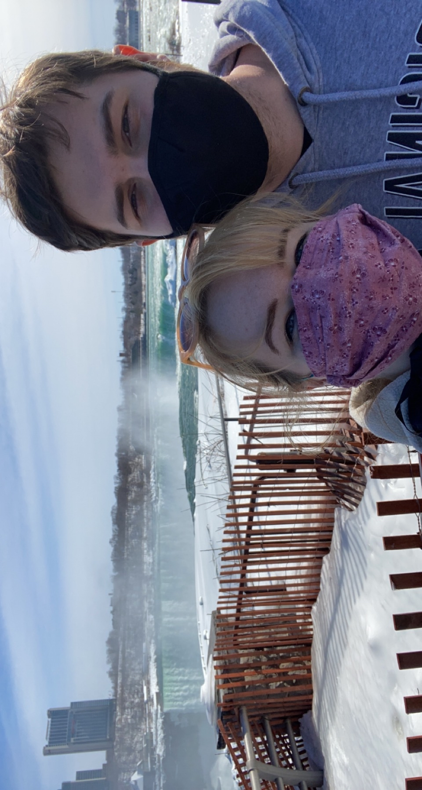
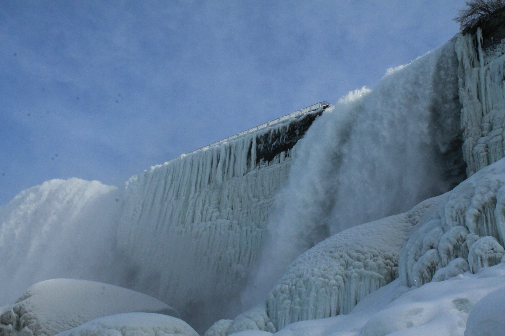
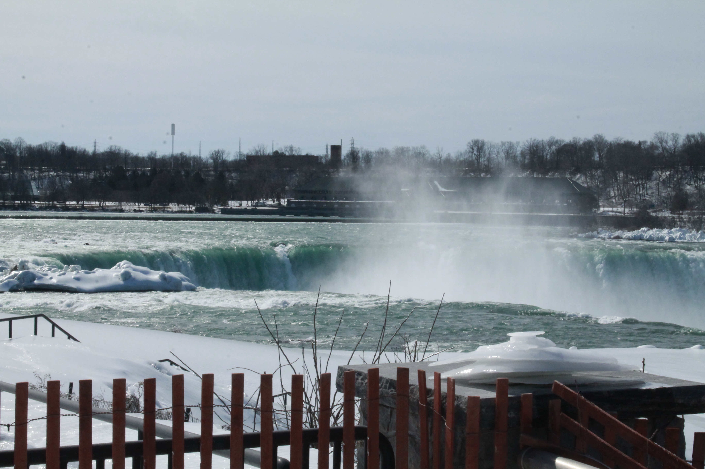
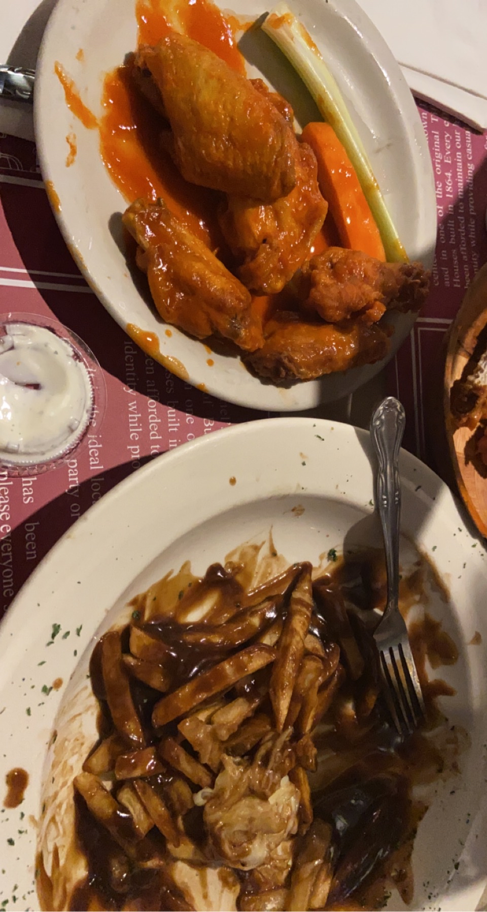
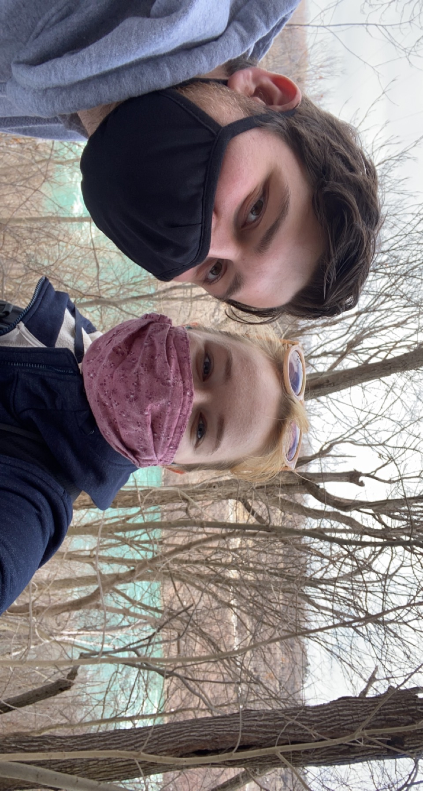

Spring Fake: Thanks OSU
Week Six
February 22, 2021-February 28, 2021

With COVID-19, the university said that there would be no spring break to reduce traveling. What they forgot is that the students need that spring break for a mental rest period. After some push back from the students, the university decided to give us several two day academic breaks instead of a spring break. It all seemed fine on paper until professors started assigning asychronous work during the break or assigning projects to be due after the break. That's not what the breaks are for, professors! Thankfully I had some of my classes switch the due dates so that break could be an actual break, but other classes were not as lucky.
However, I took this break to plan a weekend getaway with my partner to celebrate his birthday.
He had never been to Niagara Falls, I had previously but only when I was 9 or 10, so we planned a quick weekend trip to visit! Let me just tell you...the frozen falls are definitely something to see!
We were able to see the falls and a brown squirrel that I was obsessed with for 5 minutes.

We ate official Buffalo Wings and poutine,
drank local beers/ciders,

and hiked a 1000ft descension followed by a mile walk by the river then a 1000ft ascension and a mile walk above the river.
It was a great little weekend trip and would definitely recommend. Seeing Niagara Falls is one thing, but being able to see the falls frozen is another.
Now we are back. Working nonstop for the upcoming midterm week. After the previous weeks I had, this trip was needed and definitely recharged my batteries. Time to go crush some midterms!
Return to Blog List, Internet Art main page , Collections, Home.